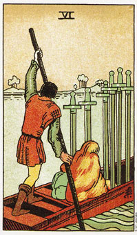

宝剑六暗示在混乱之后，逐渐回复平静。
宝剑六的牌描绘的是一名男子驾着一艘平地船，从激流处驶向平静的水面，另有一个女人和一个小孩也陪这他度过这段旅途。船上有六把剑，代表过去和现在对生活的信念。他们的重量使得船身下沉，进展显得格外困难，但如果把他们移开的话，船上会留下六个洞，而且船也会沉没。
这张牌暗示你对生活的信念使你行动迟缓，不过也别尝试急切的改变，因为进步本来就是缓慢而稳健的。急切的改变可能会导致更多的问题，而非带来解决的良方。
六这张牌暗示你正带着你的剑(问题)，从过去走向未来。或许你根本没注意到它们，然而它们却是与你紧紧相随。这是一个从艰困时刻过渡到一个较为平衡状态的过程。
刘这张牌也可能是一张哀痛的牌。它暗示一个宁静的转移，例如：生病之后的死亡，或慢慢地接受某种状况的结束。平静的水面指向前方的陆地(代表稳定)，是这张牌在告诉我们，更多和平的时光即将来临。这张牌上面倒立的剑暗示，你的思想已经回到真实情况中了，换句话说，生活正反映着你的信念。
大体上的意义
宝剑六当中所画的平地船意味这海外旅行，尤其是如果着杖牌是伴随着宝剑牌侍卫、权杖八、权杖三或节制。宝剑六可能是在说明当你转移向新的经验时，你也正慢慢的远离困境，情绪从过去释放出来。
两性关系上的意义
宝剑六这张牌意味，在你关系当中的任何困难将会很快的被你抛到身后，而且你的关系将会逐渐的成长和发展。一种新的肉体或精神上的状态，将让你由机会以截然不同的方式去经历这段关系。
现在挣扎都过去了，正是放开过去，将它留在属于它的地方的时候了。虽然许多的事情都在逐渐改善当中，不过现在你可能在财务上有点困难，或有健康方面的隐忧。
西奥和克里斯汀娜购买了一栋房子，而他被裁员六个月了。接二连三的财务困境使他们的关系压力重重，因为克里斯汀娜为了付房贷而经常加班。在为西奥所做的分析当中，宝剑六出现在现在的位置，我解释为：过去的困扰会慢慢的从他们生活当中被解决。
一个月后我们在当地的一家购物商场偶遇，他热情的向我说，他已经找到一份新工作了，收支慢慢的平衡了。
倒立的宝剑六
这张牌倒立暗示，当你揭开尚未愈合的伤口，想让它们完全的愈合时，这将会使一段充满暴风雨的旅程，可能是肉体上、可能是精神上。而且可能以谈论新问题的形式出现，即使可能会引起骚乱。
这杖牌也可能是在描述晃动船身的行为，或为了寻找解决之道而制造新的问题，因为有时候对抗反而可以消除误解，达成协调。这就像从锅子跳进火堆中一样。六的倒立意味你知道自己在某种状况下不快乐的原因，而你正在进行必要的转变，好在将来得到快乐。
举个例子，在妮琦的两性关系分析中出现了六的倒立，当我在解释的时候，她笑了。
“有一天早上我醒来，望着罗伊，忽然了解到他并不打算改变。他是个酒鬼，而且那正是他想做的。我离开了，而且从来没有回去过。刚开始过的真苦，没有水壶、锅子和基本的加剧。不过如果在重来一次，我还是会离开的。”
在六的倒立中，你把剑从船板上拔起来，面对着沉溺、游泳或在船进太多水以前抵达陆地的选择。你迫使某特定议题达到结论，以这种方式积极的寻找加速改变之道。”